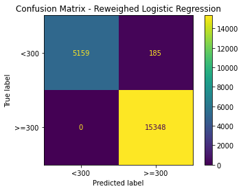
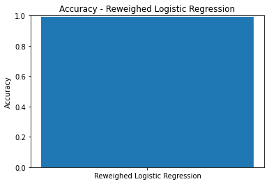
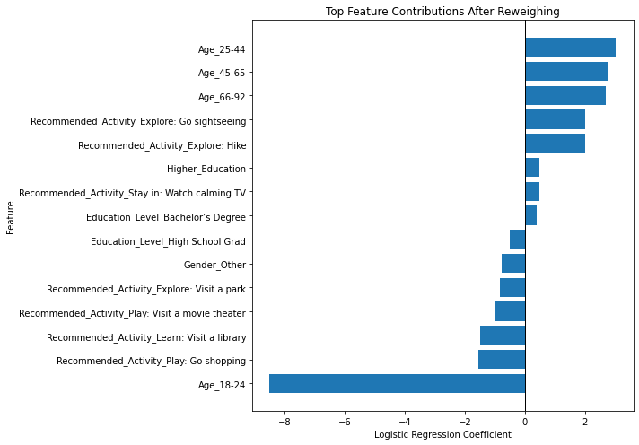
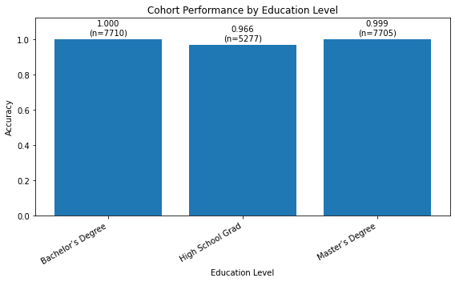

Model Card - IDOOU AI Budget Predicter
Model Details
-- Budget Predictor AI is a binary classification model for the IDOOU activity recommender use case.
-- The model predicts whether a user is likely to have a budget of >=300 dollars or <300 dollars.
-- The selected model is Logistic Regression because it performed equally well as Gaussian Naive Bayes while being more interpretable.
-- The model uses user-provided demographic and activity-related information such as age, gender, education level, children status, and activity recommendation features.
-- The model is part of a hypothetical medium-risk AI personalization system and should not be treated as a definitive statement about a user's actual financial situation.
Intended Use
-- The intended use of the model is to support budget-aware activity recommendations in the IDOOU app.
-- The model should be used only as a decision-support tool, not as the sole basis for limiting or excluding activity options.
-- IDOOU should prompt users to confirm or correct the predicted budget before recommendations are finalized, because the model may be wrong and may reproduce bias from the training data.
-- To support interpretability, the app should give users a simple explanation that the prediction is based on broad profile patterns rather than a verified budget.
-- To support privacy and fairness, IDOOU should avoid requiring sensitive information where possible, allow users to skip optional fields, and give users control over correcting or overriding the prediction.
Factors
-- Important factors include education level, age group, gender, children status, and recommended activity category.
-- Education level is especially important because the project compares users with Bachelor's or Master's degrees against users who graduated from high school.
-- The target outcome is whether the user's budget is >=300 dollars.
-- Fairness analysis shows that education level is strongly associated with the favorable outcome, which creates a risk that the model will benefit higher-education users.
-- Missing or self-reported user information may also affect model quality, because users may choose not to provide some profile details.
Metrics
-- The model was evaluated using accuracy, balanced accuracy, confusion matrices, and multiple fairness metrics.
-- Logistic Regression achieved a balanced accuracy of approximately 0.9984 on the test dataset.
-- The confusion matrix showed very few classification errors, with 2 false positives and 43 false negatives.
-- Despite strong predictive performance, the fairness metrics showed serious bias: statistical parity difference was approximately -0.9939 and equal opportunity difference was -1.0.
-- These fairness results indicate that the model strongly favors users with Bachelor's or Master's degrees over high-school-graduate users when predicting the favorable outcome of budget >=300.
Training Data
-- The training data comes from a synthetic IDOOU user experience study dataset.
-- The training split contains 51729 examples.
-- The validation split contains 31038 examples.
-- The data contains user attributes such as gender, age, education level, children status, activity recommendation, and budget.
-- The data was preprocessed by removing missing values, binning age and budget, filtering education groups for the problem statement, and one-hot encoding categorical variables.
-- The training dataset was created using a train-validation-test split from the AIF360 BinaryLabelDataset.
-- The dataset already showed strong bias before model training, so the model learned from a biased data distribution.
Evaluation Data
-- The evaluation data is the held-out test portion of the processed BinaryLabelDataset.
-- The test split contains 20692 examples.
-- The same protected groups and favorable label were used for evaluation: Bachelor's/Master's degree users as the privileged group, high-school-graduate users as the unprivileged group, and budget >=300 as the favorable outcome.
-- Evaluation included both performance metrics and fairness metrics to avoid relying on accuracy alone.
-- The test results showed that the model is highly accurate but unfair across education groups.
-- The evaluation suggests that bias mitigation is necessary before this model could responsibly be used in a real application.
Quantitative Analysis
-- After applying the Reweighing bias mitigation strategy, the model's balanced accuracy decreased from approximately 0.9984 to 0.9839.
-- This means the mitigated model is slightly less accurate than the original model, but it still performs very well overall.
-- The average odds difference improved substantially from approximately -0.5104 to -0.0018, which is very close to the ideal value of 0.
-- The equal opportunity difference also improved from -1.0000 to 0.0000, meaning the true positive rate is now equal between the privileged and unprivileged groups.
-- However, the statistical parity difference remained highly negative at approximately -0.9526, which means the unprivileged group is still much less likely to receive the favorable prediction of Budget >=300.
-- The Theil index increased slightly from approximately 0.0021 to 0.0032, indicating a small increase in inequality by this metric.
-- Overall, Reweighing improved some fairness metrics, especially average odds difference and equal opportunity difference, but it did not fully remove the disparity in favorable outcomes.
-- This suggests that the dataset contains a strong structural relationship between education level and budget, and additional mitigation or a revised problem formulation may be needed before deployment.
Results of the AI model after applying the bias mitigation strategy
Confusion Matrix - Reweighed Logistic Regression

Accuracy - Reweighed Logistic Regression

Feature Contributions After Reweighing

Cohort Performance by Education Level

Ethical Considerations
-- The IDOOU budget predictor is a medium-risk personalization model because it influences which activities users may be shown, but it does not directly make high-stakes decisions such as lending, hiring, healthcare, or legal eligibility. However, it can still cause harm because it predicts a financially relevant attribute from demographic and profile features such as age and education level.
-- The dataset shows strong bias around education level. Before mitigation, users with Bachelor's or Master's degrees were much more likely to receive the favorable outcome of Budget >=300 than high-school-graduate users. This creates a risk that the recommender system could systematically show higher-budget options to higher-education users and lower-budget options to high-school-graduate users.
-- Human-in-the-loop controls are important for this use case. IDOOU should not silently rely on the model prediction; users should be able to view, confirm, correct, or override the predicted budget before recommendations are finalized. The app should also explain that the prediction is based on broad profile patterns rather than verified financial information.
-- The selected model, Logistic Regression, is highly accurate but not fully fair. Before mitigation, the model had strong unfairness metrics, including a statistical parity difference around -0.9939 and equal opportunity difference of -1.0. After applying Reweighing, balanced accuracy decreased slightly from about 0.9984 to 0.9839, while average odds difference improved to about -0.0018 and equal opportunity difference improved to 0.0. However, statistical parity difference remained very negative at about -0.9526, so the favorable prediction is still distributed unevenly.
-- Interpretability analysis showed that age and education were the strongest contributing factors. Before mitigation, Age_18-24 had a large negative effect, while older age groups and higher education features pushed predictions toward Budget >=300. Education_Level_High School Grad pushed predictions toward Budget <300, while Higher_Education, Bachelor's Degree, and Master's Degree pushed predictions toward Budget >=300. After mitigation, education and age remained important, which suggests that the model still relies on demographic and socioeconomic proxy variables.
-- The main risk mitigation strategy applied was AIF360 Reweighing. This strategy adjusted the training instance weights to reduce the relationship between the protected attribute and the target outcome while keeping Logistic Regression as the selected model. Reweighing improved some fairness metrics, especially equal opportunity and average odds, but it did not fully solve the statistical parity problem.
Caveats and Recommendations
-- The dataset may not be fully inclusive or representative of all IDOOU users. Some demographic groups may be underrepresented, and users may choose not to provide profile details such as gender, age, education level, or children status. This can limit model quality and fairness for groups with less data.
-- The model appears to be more prone to false negatives than false positives in the original evaluation. False negatives are important in this use case because they mean users who actually have Budget >=300 may be incorrectly predicted as having Budget <300, which could limit the activity recommendations they receive.
-- The model should not be used as the sole decision-maker for personalizing activity recommendations. IDOOU should ask users to directly confirm or enter their budget instead of inferring it only from demographic features. The app should also allow users to opt out of budget prediction and still receive useful recommendations.
-- Education level should be treated carefully because it functions as a strong proxy for socioeconomic status in this dataset. If the app uses this prediction in production, IDOOU should monitor fairness metrics over time and check whether users from different education groups receive meaningfully different recommendation quality.
-- If given more time, I would perform additional ethical AI analyses, including intersectional fairness analysis across education, age, and gender; robustness testing for missing user-provided data; and user-centered evaluation to understand whether people perceive the recommendations as fair, useful, and respectful of privacy.
-- I would also test additional mitigation strategies, such as removing sensitive or proxy features, post-processing thresholds by group, and comparing fairness-performance tradeoffs across multiple model types before deciding whether the model is appropriate for deployment.
Business Consequences
-- Positive Impact:
-- The IDOOU Budget Predictor AI could improve personalization by helping the app recommend activities that better match a user's likely budget.
-- If used responsibly, the model could reduce irrelevant recommendations, improve user satisfaction, and make the app feel more convenient and tailored.
-- The model could also help IDOOU understand broad user segments and improve activity planning, recommendation quality, and business partnerships.
-- Because the final model still performs with high balanced accuracy after mitigation, it may provide business value as a decision-support component if combined with user confirmation and transparency.
-- Negative Impact:
-- Users may lose trust if they feel the app is guessing their financial situation from demographic information such as age or education level.
-- The fairness analysis shows that high-school-graduate users are still much less likely to receive the favorable Budget >=300 prediction, even after mitigation, so the app could create unequal recommendation experiences.
-- If users are shown cheaper or less desirable activities because of biased predictions, they may perceive the app as unfair, discriminatory, or disrespectful.
-- This could lead to lower engagement, user churn, negative reviews, reputational damage, and potential revenue loss for IDOOU.
-- If IDOOU deploys the model without explanation, consent, or a way for users to correct the predicted budget, the organization may face increased ethical, legal, and brand risk.